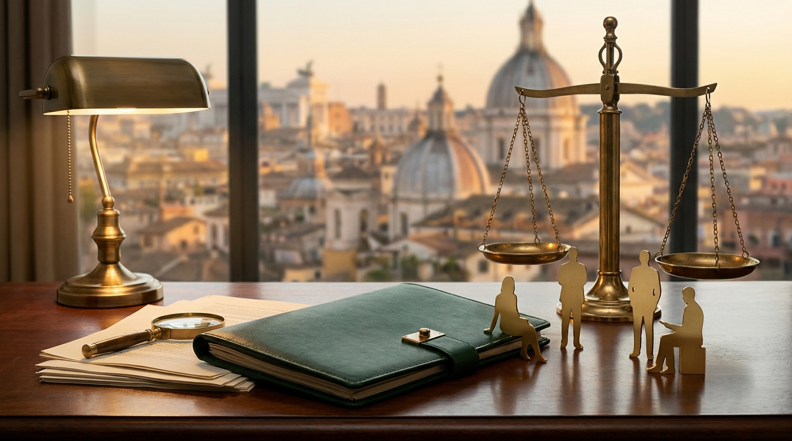

Annunci di lavoro discriminatori: chi è legittimato ad agire
Un annuncio di lavoro che esclude candidati in base a età, sesso, origine o altri fattori protetti può essere contestato in giudizio. A poterlo fare non sono soltanto le persone discriminate, ma anche le organizzazioni sindacali. Una recente pronuncia del Tribunale di Trento ribadisce l'ampiezza della legittimazione ad agire prevista dalla normativa antidiscriminatoria.

Il fatto
Un annuncio di lavoro che filtra i candidati in base a caratteristiche personali protette - età, genere, nazionalità, convinzioni religiose, orientamento sessuale, disabilità - può costituire una discriminazione vietata già nella fase di selezione, prima ancora dell'assunzione.
La questione pratica riguarda chi sia legittimato a portarla davanti a un giudice. La risposta non si esaurisce nella singola persona esclusa: il legislatore ha previsto strumenti di tutela collettiva. Lo conferma il Tribunale di Trento con la sentenza n. 53 del 27 aprile 2026.
Inquadramento normativo
Il divieto di discriminazione nel rapporto di lavoro ha basi consolidate. L'art. 15 della legge 300/1970 (Statuto dei lavoratori) sanziona con la nullità gli atti diretti a discriminare il lavoratore. In materia di parità di trattamento per religione, convinzioni personali, disabilità, età e orientamento sessuale, il riferimento è il d.lgs. 216/2003.
L'art. 2 del d.lgs. 216/2003 distingue la discriminazione diretta - quando una persona è trattata meno favorevolmente di un'altra in situazione analoga - da quella indiretta, che si verifica quando una disposizione apparentemente neutra mette in posizione di svantaggio determinati soggetti. Un annuncio rientra a pieno titolo tra gli atti rilevanti.
L'art. 3 estende la tutela all'accesso all'occupazione, comprendendo i criteri di selezione e le condizioni di assunzione. L'art. 5 individua i soggetti legittimati ad agire: oltre alla persona discriminata, le organizzazioni sindacali e gli enti rappresentativi degli interessi lesi possono agire in nome, per conto o a sostegno del soggetto, e anche nei casi di discriminazione collettiva quando non sia individuabile in modo diretto e immediato la persona lesa.
Il rito applicabile è quello dell'art. 28 del d.lgs. 150/2011, che disciplina le controversie in materia di discriminazione con forme processuali semplificate e l'inversione parziale dell'onere della prova.
Cosa significa in concreto
Il punto centrale è che la pubblicazione di un annuncio discriminatorio può essere contestata anche quando non esiste una vittima individuabile. Se l'inserzione scoraggia in radice intere categorie - per esempio richiedendo un limite di età non giustificato dalle mansioni - la lesione è diffusa e il sindacato può agire autonomamente.
Per il datore di lavoro questo amplia il fronte del rischio. Non basta evitare un contenzioso con il singolo candidato: la formulazione stessa dell'annuncio è valutabile e può generare un giudizio promosso da soggetti collettivi, con possibile ordine di rimozione, condanna al risarcimento e pubblicazione del provvedimento.
Per i candidati esclusi la legge non richiede di dimostrare di essere stati effettivamente scartati per quel motivo: è sufficiente allegare elementi di fatto idonei a fondare la presunzione di discriminazione. A quel punto spetta al datore provare l'insussistenza.
Alcuni requisiti possono essere legittimi se rispondono a una finalità essenziale e determinante per lo svolgimento della mansione. La conoscenza di una lingua per un ruolo che la richiede è ammissibile; un limite anagrafico generico, di norma, no.
Cosa fare in concreto
- Datori di lavoro: rivedete i testi degli annunci eliminando riferimenti a età, sesso, nazionalità, stato civile o altri fattori protetti che non siano oggettivamente giustificati dalla mansione.
- Datori di lavoro: documentate le ragioni di eventuali requisiti selettivi, così da poter dimostrare che rispondono a una finalità legittima e proporzionata.
- Candidati esclusi: conservate copia dell'annuncio e di ogni comunicazione ricevuta; questi materiali costituiscono il primo elemento utile a fondare un'eventuale azione.
- Lavoratori e candidati: valutate, anche tramite le organizzazioni sindacali, se la situazione configuri una discriminazione individuale o collettiva, perché cambia il soggetto che può agire.
- Tutti: verificate i termini, poiché l'azione antidiscriminatoria segue regole processuali specifiche; consigliamo di rivolgersi tempestivamente a un professionista per inquadrare la posizione.
Conclusione
La normativa antidiscriminatoria copre l'intero percorso di accesso al lavoro, a partire dall'annuncio. La pluralità di soggetti legittimati - persona esclusa ed enti collettivi - rende il presidio più solido e, per le imprese, impone attenzione alla redazione delle inserzioni fin dalla prima riga.
Contributo informativo a cura di Tamburro & Partners - Avv. Giuseppe Tamburro. Non costituisce parere legale.
Ogni storia di lavoro ha i suoi tempi.
Se gestisci HR e vuoi un confronto su contenzioso, ispezioni o licenziamenti, scrivi allo studio. Ti rispondiamo entro un giorno lavorativo.